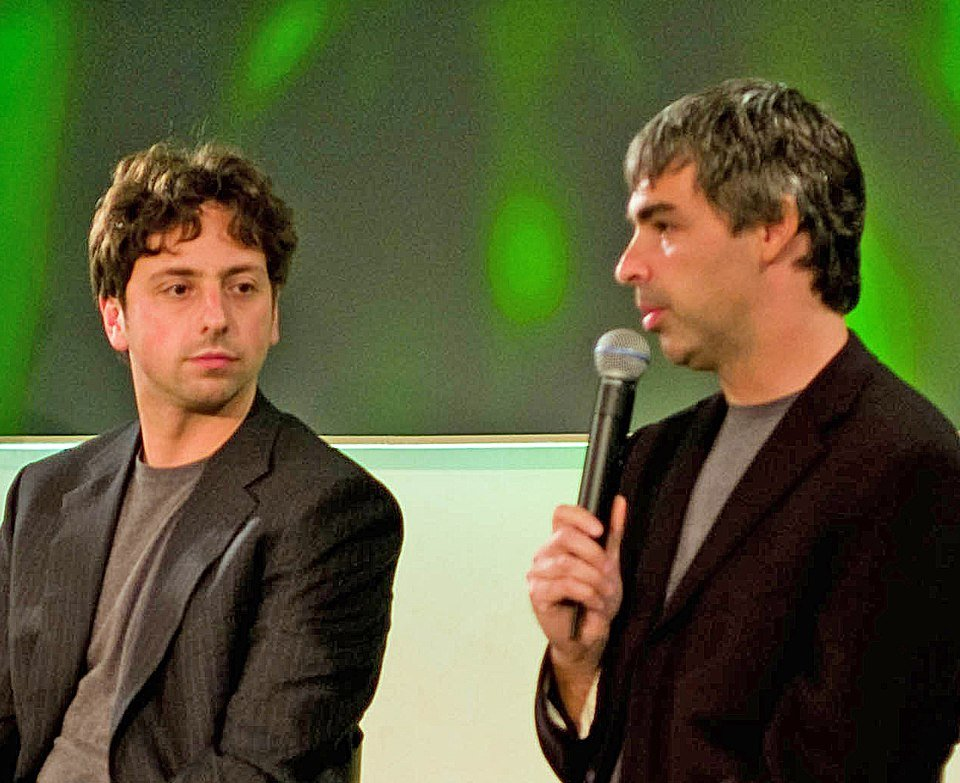

Three real, documented VC decisions — one that paid off enormously, one that famously missed, and one that shows what happens when the evaluation framework gets ignored. Each case applies the framework from How Investors Decide.
Real Examples: When VCs Got It Right (and Wrong)
Google: Betting on the Team Before the Business Model

In 1999, Google wasn’t much more than two Stanford PhD students, a search algorithm called PageRank, and no real revenue model yet. Sequoia Capital and Kleiner Perkins still led a $25 million round into the company, with Sequoia’s Michael Moritz and Kleiner’s John Doerr joining the board. Moritz later said he believed Google could become “the gold standard for search on the internet.” That bet was almost entirely a bet on the team and the technology — the business model (search advertising) didn’t really exist yet. It’s a clean example of investors weighing the “team” and “product” factors heavily even when the “traction” and clear path to revenue weren’t fully there yet.
Airbnb: When Investors Misjudge the Market
In 2008, Brian Chesky and his co-founders tried to raise $150,000 for Airbnb at a $1.5 million valuation. According to Chesky’s own account, they were turned down by around a dozen investors, several of whom said they simply didn’t believe the market was there — who would actually pay to stay in a stranger’s home? Fred Wilson, a well-known investor who passed, later called it a mistake he still thinks about. Airbnb eventually raised a small amount from Y Combinator and grew into a company worth tens of billions of dollars. The lesson isn’t that these investors were bad at their jobs — it’s that market-size judgments are genuinely hard to make this early, and even experienced VCs get them wrong in both directions.
Theranos: What Happens When the Framework Gets Skipped
Theranos raised roughly $700 million from investors on the promise of a blood-testing device that could run hundreds of tests from a single finger-prick of blood. The company was later found to have misrepresented what its technology could actually do, and its founder, Elizabeth Holmes, was convicted of fraud. What stands out looking back is how much of the standard evaluation framework got skipped. The company operated under extreme secrecy, and directors and investors were largely unable to independently verify the technology, relying instead on Holmes’s own claims. It’s a reminder that every factor — team, market, product, traction — only matters if an investor can actually verify it, and that a compelling founder telling a compelling story is not the same thing as real traction.
Side by Side
| Company | Money Involved | What Investors Weighed | Outcome |
|---|---|---|---|
| $25 million round (1999) | Team and technology, before a business model existed | Sequoia and Kleiner Perkins led the round | |
| Airbnb | $150,000 sought (2008) | Market size, which many investors doubted | Turned down by around a dozen investors, then grew into a company worth tens of billions |
| Theranos | Roughly $700 million raised | A compelling founder’s claims, which could not be verified | Misrepresented its technology; founder convicted of fraud |
The Pattern Across All Three
None of these stories are really about luck. Google shows what it looks like when investors correctly bet on a team and a product before the business model was obvious. Airbnb shows how easy it is to misjudge a market that doesn’t look like anything that came before it. And Theranos shows what happens when the whole framework — team, market, product, traction — gets replaced with a good story and a trusted name. Put together, they’re a good argument for the evaluation framework on the previous page: not as a formula that guarantees the right answer, but as a discipline that keeps investors from skipping the questions that actually matter.